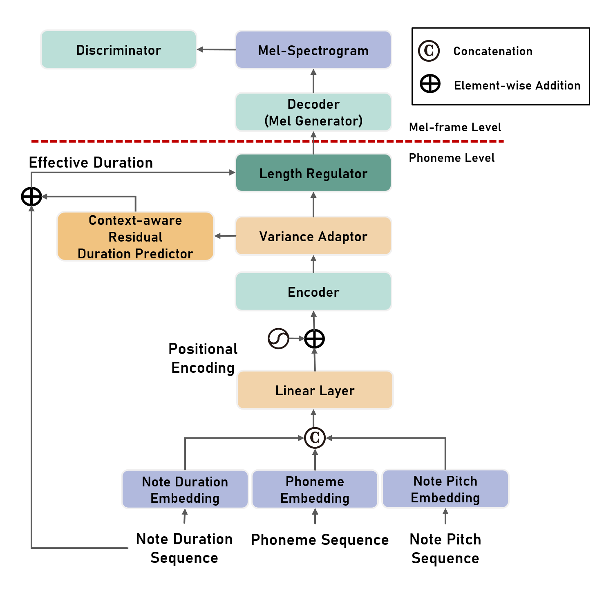
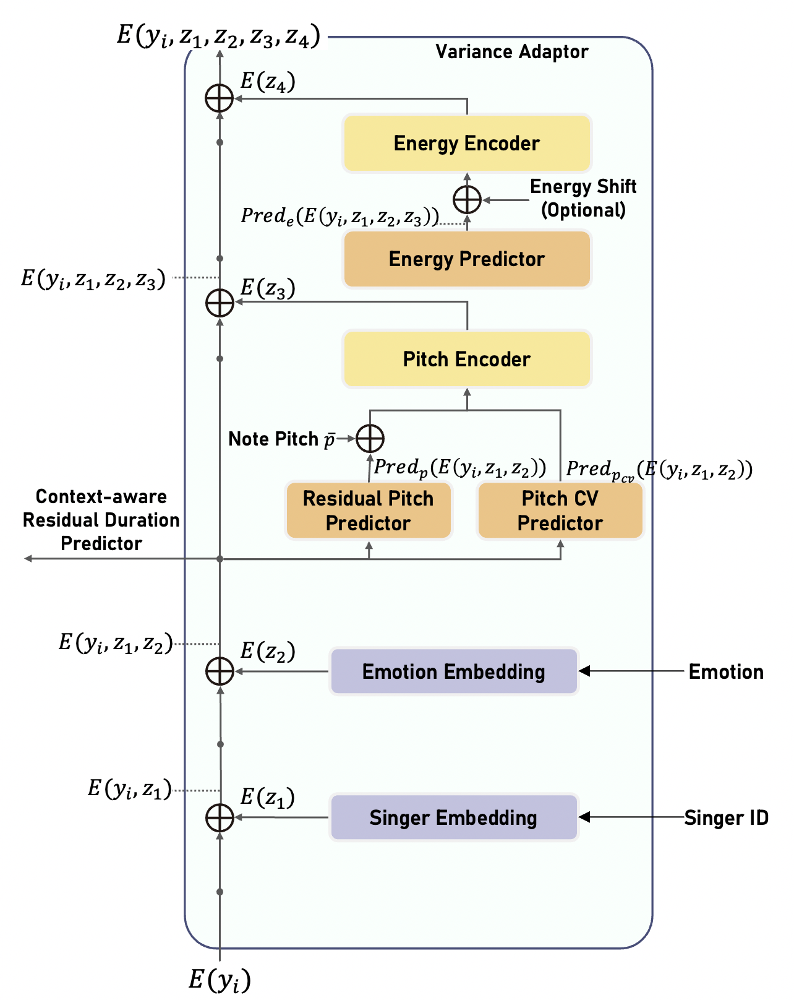
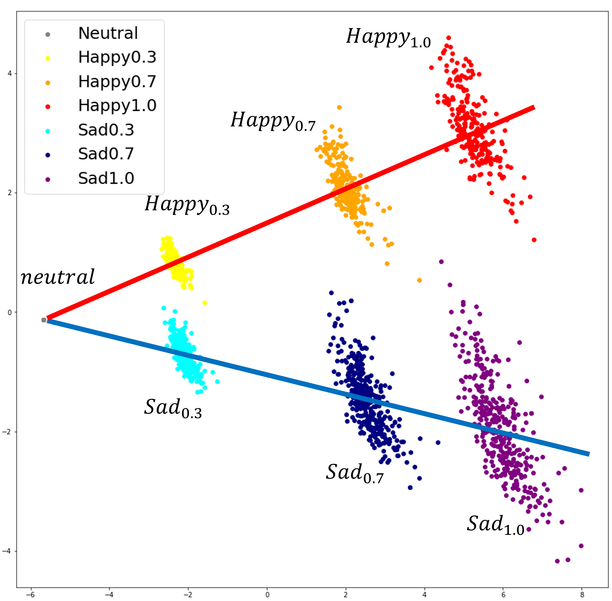
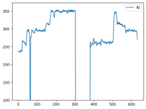
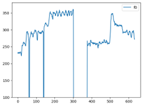
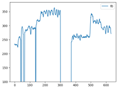
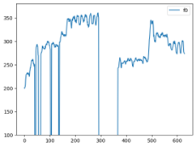

Multi Singer Emotional Singing Voice Synthesizer that Controls Emotional Intensity
MuSE-SVS is the first multi-singer emotional singing voice synthesizer that expresses various levels of emotional intensity. During synthesizing singing voices according to the lyrics, pitch, and duration of the music score, Muse-SVS reflects singer characteristics and emotional intensity by adding variances in pitch, energy, and phoneme duration according to singer ID and emotional intensity. Representing all attributes by conditional residual embeddings in a single unified embedding space, Muse-SVS controls mutually correlated style attributes, minimizing interference. Additionally, we apply emotion embedding interpolation and extrapolation techniques that lead the model to learn a linear embedding space and allow the model to express emotional intensity levels not included in the training data. In experiments, Muse-SVS synthesized high fidelity singing voices reflecting the singer ID and emotional intensity. Muse-SVS exhibits significantly better results than other comparative models in several quantitative evaluation. Furthermore, the visualization of the unified embedding space exhibits that Muse-SVS estimates the correct variations in pitch and energy highly correlated with the singer ID and emotional intensity level.
|  |  |
| Model Overall Structure | Variance Adaptor Structure |
Because MuSE-SVS is the first mutli-singer emotional SVS model, there is no exisiting baselnie model to compare fairly. Therefore, we built two multi-singer emotional SVS models by extending FastSpeech2 and VISinger to multi-singer and multi-emotional models, and named then ‘extFFTSinger’ and ‘extVISinger’. These audio samples are the results of training MuSE-SVS and baseline models to learn embeddings of multi-singer, multi-emotion and multi-intensity. If you need more details of baseline models, please check the paper.
Samples of female singer (Sad)
| Neutral | Sad 0.3 | Sad 0.7 | Sad 1.0 | |
|---|---|---|---|---|
| MuSE-SVS | ||||
| extVISinger | ||||
| extFFTSinger |
Samples of male singer (Joy)
| Neutral | Joy 0.3 | Joy 0.7 | Joy 1.0 | |
|---|---|---|---|---|
| MuSE-Singer | ||||
| extVISinger | ||||
| extFFTSinger |
We only trained 4 stages of intensity, which is 0.0, 0.3, 0.7, and 1.0. Because MuSE-Singer learns a unified embedding space, it is possible to extract any scale of intensity even though it is not included in training dataset.
Embedding Space
| Neutral | Joy 0.5 (Interpolation) | Joy 1.0 | Joy 1.5 (Extrapolation) | |
|---|---|---|---|---|
| MuSE-SVS |
Comparison of F0 contour
| Neutral | Sad 0.3 | Sad 0.7 | Sad 1.0 | |
|---|---|---|---|---|
| MuSE-SVS |  |  |  |  |
This audio sample is the result of concation of multiple singing voice samples which are syntheiszed by same song but different part of each. We add MIDI of the song to the audio sample of singing voice.